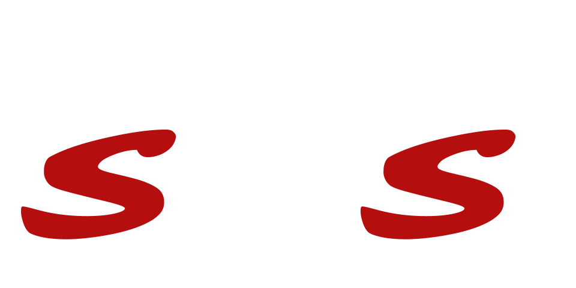

I'm Saif SIDHIK
Robotics and Control Machine Learning Manipulation Locomotion
mail@saifsidhik.page
About Projects Résumé ContactAbout
Let me introduce myself.
Currently, as a Senior Robotics Engineer at Leap AI, I lead the development of the robot behaviour pipeline as well as software integration for the next-gen warehouse automation robotic solution.
Previously, I was a Lead Robotics Research Engineer at Dyson, leading the development of the control software framework, as well as implementing different control and software components required to develop a loco-manipulation platform capable of performing home-safe tasks in human-occupied environments. (Sneak peak)
I hold a PhD in Robotics from the Intelligent Robotics Lab at the University of Birmingham, where I worked on using techniques from model-based and learning-based aproaches to develop a control framework for robots performing complex manipulation tasks.. The main topic of research during my PhD was "An Adaptive Framework for Changing-Contact Manipulation", which was done in collaboration with Honda Research Institute (EU). My PhD was supervised by Mohan Sridharan, Dirk Ruiken, and Akinobu Hayashi.
Portfolio
Here are Some of My Works.
Relevant Publications
Conferences and Journals
Workshops
-
ABSTRACT: While performing a new manipulation task, humans tend to be stiffer in the initial trials to improve task accuracy and counter any unforeseen disturbances. After a sufficient number of repetitions, humans are able to perform the task with lower stiffness without causing any significant reduction in task performance. Existing literature in human and animal motor control indicates that learned internal models of the manipulation task and the environment are used to predict the state in response to particular control actions, adapting stiffness on the fly to minimise energy usage. Inspired by these findings, we describe a framework that, in a significant departure from existing work, supports online learning of a time-independent forward model of any given manipulation task in the task space from a small number of samples. Errors in the predictions of the forward model are used to dynamically revise the model and adapt the impedance parameters of the feedback controller. Furthermore, a hybrid force-motion controller supports compliance in certain directions while adapting the stiffness in other directions. We evaluate our framework’s capabilities in the context of continuous-contact manipulation tasks with varying external forces.
Submitted to: Workshop on "Task-Informed Grasping: From Perception to Physical Interaction (TIG-II)" at the "Robotics Science and Systems Conference (RSS)", June 22, 2019, Freiburg, Germany.
Open Source Software and Libraries
-
Provides Python API and ROS utilites for controlling and managing the Franka Emika Panda robot (real and simulated). Contains exposed controllers for the robot (joint position, velocity, torque), interfaces for the gripper, controller manager, coordinate frames interface, etc. Also provides utilities to control the robot using MoveIt! and ROS Trajectory Action & ActionClient. This package also provides almost complete sim-to-real / real-to-sim transfer of code with the Panda Simulator package.
Star
Features
- Low-level controllers (joint position, velocity, torque, impedance) available that can be controlled through ROS topics and Python API (including position control for gripper).
- Real-time robot state (end-effector state, joint state, controller state, etc.) available through ROS topics and Python API.
- Python API for managing controllers, coordinate frames, collision behaviour, controlling and monitoring the gripper.
- Python API classes and utility functions to control the robot using MoveIt! and ROS Trajectory Action Service.
- The panda_simulator package (which is Gazebo-based simulator for the robot) can also be controlled using this package (ROS and Python interface), providing almost complete sim-to-real transfer of code.

-
A Gazebo simulator for the Franka Emika Panda robot with ROS interface, providing exposed controllers and real-time robot state feedback similar to the real robot when using the Franka ROS Interface package.
Star
Features
- Low-level controllers (joint position, velocity, torque) available that can be controlled through ROS topics (including position control for gripper).
- Real-time robot state (end-effector state, joint state, controller state, etc.) available through ROS topics.
- The Franka ROS Interface package (which is a ROS interface for controlling the real Panda robot) can also be used with the panda_simulator, providing direct sim-to-real code transfer. The PandaRobot package which provides simplified python API for the robot can also be used for direct sim-to-real code transfer, as well as for performing real-time kinematics and dynamics computation.
- Supports MoveIt planning and control for the robot arm and Franka Gripper.

Most of my other works are publicly available from my Github page.
Other Projects
Work Experience
Senior Robotics Engineer
2024 - Present
Leap AI
Currently leading the development of robot behaviour pipeline and robotics software for the next-gen warehouse automation robot from Leap AI.
Lead Robotics Research Engineer
2024
Dyson
As part of a multi-disciplinary robotics team at Dyson, I am currently leading the development of the control software framework, as well as implementing different control and software components required to develop a loco-manipulation platform capable of performing home-safe tasks in human-occupied environments.
Senior Robotics Research Engineer
2021 - 2023
Dyson
Developed control and state estmation algorithms for locomotion and manipulation tasks for different robot embodiments and formats. Developed hardware and simulation interfaces to be able to apply same controllers and perform same tasks on a physical and simulated robot interchangeably.Software Developer, Product Designer
2017 - 2021
Obi Robotics
As one of the founding members of the robotics solutions company, I worked part-time as a software developer and product designer (3D CAD designing) for Obi Robotics.
Teaching Assistant
Nov 2017 - 2021
University of Birmingham, UK
Work(ed) as teaching assistant for modules including Intelligent Robotics, Robot Programming, Intelligent Data Analysis, Data Structures and Algorithms, Software Workshop, and Graphics.
Tutor
Sept 2018 - Jan 2019
University of Birmingham, UK
Conducted tutorial sessions on Java for undergraduate students for the Software Workshop module.
Chief Technical Officer
March 2015 - May 2016
Innovation and Entrepreneurship Development Cell, TKMCE, India (Non-Profit)
Co-founded the Innovation and Entrepreneurship Development Cell (TKMCE) to encourage and develop innovative and entrepreneurship spirit in students. Helped in starting the APJ DreamLab, which is a state of the art FabLab for product prototyping. As CTO, I conducted various technical workshops, competitions and seminars, as well as led several projects for developing affordable assistive devices for the differently abled.
Education
PhD in Robotics (Computer Science)
2017 - 2021
University of Birmingham, UK
For my research thesis, I worked on developing a control and learning framework for enabling a robot to perform changing-contact manipulation tasks, using different machine learning (RL, SL, Deep) techniques and robot dynamics/control strategies. Read thesis.
MSc Robotics
Sept 2016 - Sept 2017
University of Birmingham, UK
Covered courses in Intelligent Robotics, Robot Kinematics, Dynamics & Control, Machine Learning, Neural Computation and Computer Vision.
BTech Mechanical Engineering
Sept 2012 - May 2016
TKM College of Engineering, India
Covered subjects including Mechatronics, Computer-Aided-Designing (Mechanical), Creativity and Product Development, Machine Tools, Fluid Mechanics, IC Engines, Design of Machine Elements, and Thermal Engineering. Mechanics of Machinery.
Contact
Feel Free to Contact Me
Get in touch to find out more about my work.